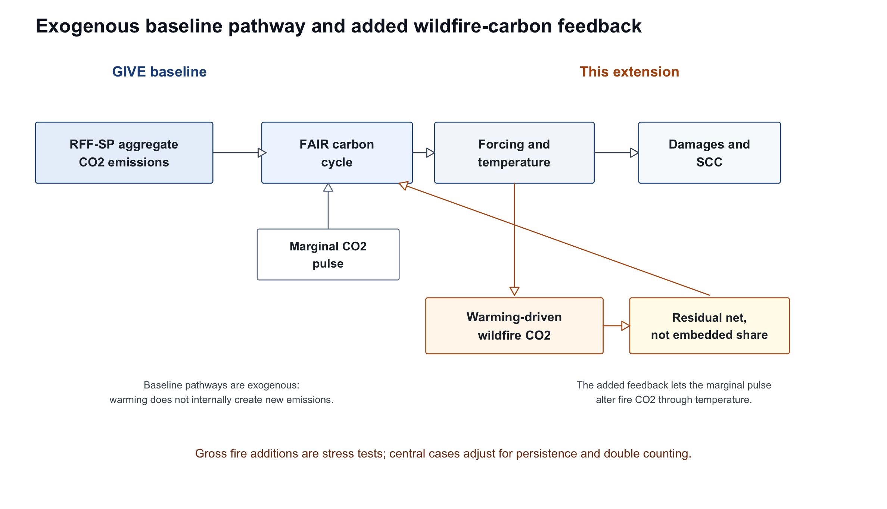
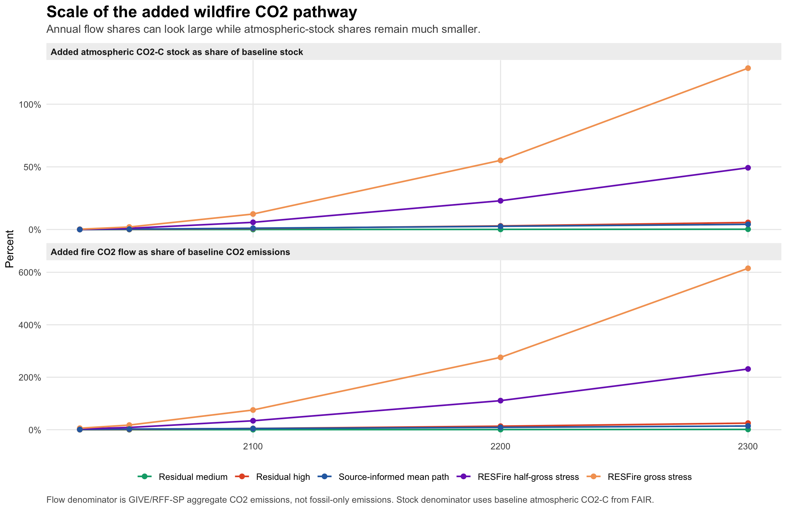
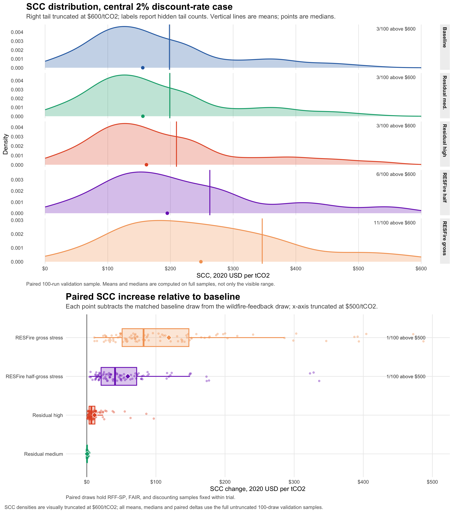
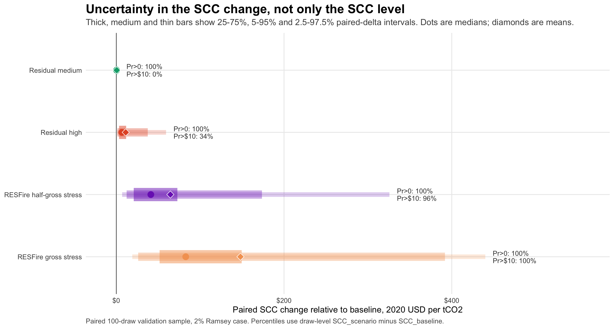
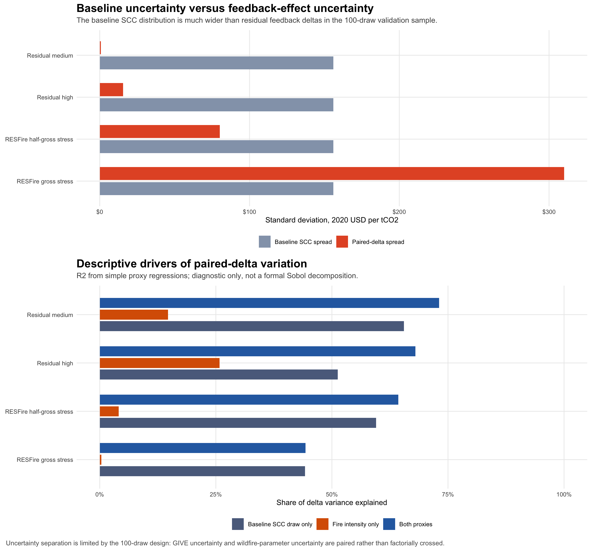
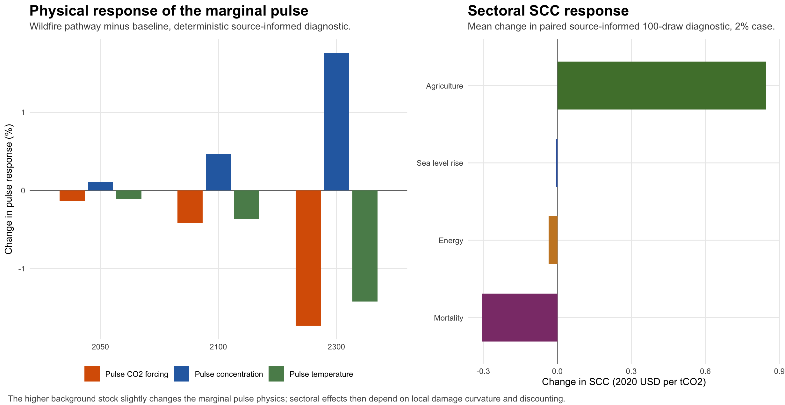

July 25, 2026
Wildfire links climate change, ecosystem carbon storage and human welfare, but its treatment in social cost of carbon dioxide (SC-CO2) calculations is difficult because fire carbon is often mixed into aggregate land-carbon and emissions pathways. Here we audit the Greenhouse Gas Impact Value Estimator (GIVE), the model used in Rennert et al. (2022), and test a reduced-form wildfire-carbon feedback. GIVE uses exogenous emissions, population and income scenarios, so it does not internally generate a warming-to-wildfire-CO2 feedback. The released aggregate CO2 pathway also cannot reveal whether some fire-related carbon is already embedded in land-use, natural-stock or expert emissions judgements. We therefore distinguish gross fire emissions from the residual net-persistent share not already represented in the baseline, and characterize uncertainty in physical response, atmospheric persistence and accounting overlap. In paired 100-draw validation runs, a high residual feedback raises the mean 2% SC-CO2 by 5.65%, with a 5-95% paired-delta interval of 1.25-37.51 USD/tCO2. A gross forest-fire stress case raises the mean by 74.62%. The results show that wildfire-carbon feedbacks can matter for marginal damages, but that unqualified gross additions would risk double counting.
The social cost of carbon dioxide is the present value of global damages caused by one additional tonne of CO2. It is a marginal concept, but it depends on a large baseline system: future emissions, atmospheric concentrations, climate response, socioeconomic exposure, sectoral damages and discounting. Rennert et al. (2022) produced a leading evidence-based estimate using GIVE, following the modular architecture recommended by the National Academies (2017). Their preferred mean estimate, about 185 2020 USD/tCO2 under a 2.0% near-term Ramsey discount specification, is now central to climate-policy analysis.
Recent SCC research has widened the evidence base for damages, discounting and uncertainty. GIVE incorporates updated socioeconomic projections, the FaIR carbon-cycle and climate model, BRICK sea-level projections, empirical damage functions for mortality, energy, agriculture and coastal impacts, and stochastic discounting (Prest et al., 2022; Leach et al., 2021; Wong et al., 2017; Carleton et al., 2022; Rode et al., 2021; Moore et al., 2017). Other work has estimated the mortality cost of carbon, country-level SCCs and macroeconomic temperature damages (Bressler, 2021; Ricke et al., 2018; Burke et al., 2015). The frontier is no longer whether climate damages exist, but which physical and ecological pathways remain missing or only implicitly represented.
Wildfire is one such pathway. Fires emit CO2 and chemically active gases, change aerosol and ozone precursor burdens, expose populations to smoke and alter land carbon through vegetation mortality, regrowth, soil carbon change and pyrogenic carbon formation (Bowman et al., 2009; Giglio et al., 2013; van der Werf et al., 2017; Jones et al., 2019). Recent extreme events illustrate the scale. The 2023 Canadian wildfires emitted roughly 647-674 TgC, equivalent to about 2.4-2.5 GtCO2 after multiplying by 44/12, with some reporting ranges extending above 3 GtCO2 (Byrne et al., 2024). That amount is large relative to annual global anthropogenic CO2 flows: roughly 6-8% of fossil and industry emissions in a year, or about 6-7% of emissions including land-use change (Friedlingstein et al., 2023, 2025). But it is a flow, not a stock, and much gross fire CO2 is part of the land-carbon cycle.
The direction of future fire carbon is not globally simple. Satellite records show that global burned area declined over recent decades, largely because human land use reduced savanna and grassland burning (Andela et al., 2017). At the same time, anthropogenic warming has increased fire weather and contributed to fire risk in some forests, including western North America and boreal systems (Jolly et al., 2015; Abatzoglou and Williams, 2016; Walker et al., 2019; Zheng et al., 2023). Process and reduced-form fire models project regionally heterogeneous responses governed by fuel, moisture, ignition, suppression, vegetation change and land management (Moritz et al., 2012; Pechony and Shindell, 2010; Zou et al., 2019, 2020). Recent RESFire-based work projects substantial increases in forest-fire emissions and associated atmospheric-chemistry feedbacks under warming (Chen et al., 2026). These studies motivate an SCC extension, but they do not imply that every tonne of gross fire CO2 should be added to an emissions baseline.
Two fire-related SCC channels should be separated. One is a damages channel: the marginal tonne warms the climate, warming changes smoke exposure, and smoke mortality is monetized. Qiu et al. (2026) estimate this type of wildfire-smoke mortality benefit from mitigation. The other is a carbon-cycle feedback: the marginal tonne warms the climate, warming increases fire CO2, and that additional CO2 enters the carbon cycle, causing further forcing, warming and damages. This paper studies the second channel. A complete fire SCC would eventually combine smoke, CO2, methane, ozone chemistry, aerosols, albedo and ecosystem impacts without counting the same climate-fire response more than once.
The main obstacle is double counting. The RFF socioeconomic projections used by GIVE contain aggregate CO2 emissions, and the elicitation underlying those projections asked experts about broad emissions categories including fossil and process CO2 and net CO2 from natural stocks, AFOLU and negative-emissions technologies (Prest et al., 2022). Fire carbon could plausibly appear in those broad categories. The released model inputs, however, do not decompose aggregate CO2 into fossil, industrial, land-use, wildfire, natural-stock or negative-emissions components. The public model can therefore support a clear claim about model structure, but not a definitive claim that all fire carbon is absent.
We make that distinction the organizing principle of the analysis. GIVE does not internally generate a warming-driven wildfire-carbon feedback because emissions, population and income are exogenous. Unlike a Kaya-style emissions construction, in which emissions can be decomposed into population, income per person, energy intensity and carbon intensity, GIVE takes future emissions scenarios as inputs rather than recomputing them from climate damages or feedbacks. We therefore add a temperature-dependent wildfire-carbon feedback to the carbon cycle. To avoid overstating the result, we scale gross fire response by the share treated as net persistent and by the share treated as not already embedded in baseline aggregate CO2. Gross fire cases are retained only as stress tests.
The baseline pathway used in GIVE does not contain a separate wildfire or biomass-burning CO2 variable. It contains aggregate global CO2 emissions, and the model carries that pathway into the FaIR carbon cycle. The model also uses exogenous socioeconomic trajectories. As a result, warming in GIVE does not cause additional emissions through wildfire, land-use change, economic disruption or population change. A marginal CO2 pulse can change concentrations, forcing, temperature, sea level and damages, but it does not by itself change the future emissions scenario unless a feedback is added.
This audit supports a narrow but important inference. A warming-to-fire-CO2 feedback is not generated endogenously by GIVE. It does not support the stronger inference that baseline emissions exclude all fire-related carbon. Some fire effects may already be embedded in broad AFOLU, natural-stock or expert aggregate-emissions expectations. The correct first-pass experiment is therefore not a gross wildfire addition. It is a residual feedback: the net-persistent climate-driven fire CO2 not already represented in the aggregate baseline.

We model added fire CO2 as a reduced-form response to lagged global mean temperature above the 2020 reference level. Annual added fire emissions equal a reference gross fire-carbon flux multiplied by a temperature-response slope, a net-persistence fraction and a not-already-embedded fraction. These three terms separate different uncertainties. The gross temperature response is a physical fire-model uncertainty. The net-persistence fraction is a carbon-cycle uncertainty: regrowth, changing future sink strength, pyrogenic carbon and soil carbon determine whether gross combustion becomes durable atmospheric CO2. The not-already-embedded fraction is an accounting uncertainty, not a physical parameter. It represents the share of the feedback not already captured in RFF-SP aggregate CO2.
The residual-medium scenario is deliberately conservative. It assumes a modest temperature response, low net persistence and partial embedding in baseline emissions. The residual-high scenario allows a stronger climate-fire response and a larger missing share, but still treats gross fire emissions as only partly persistent and only partly absent from the baseline. The RESFire-style stress cases remove these protections by setting persistence and missing fractions to one and calibrating the response to high forest-fire projections. They are useful for testing the mechanism; they are not double-counting-safe central estimates.
We make the source-side accounting assumption explicit with a qualitative global proxy. The proxy is not an observed emissions inventory, not a GIVE model output and not a damage map. It is a transparent 0-1 index for regions where climate-sensitive fire-carbon additions are most plausible in the literature, with a residual version that downweights places where gross fire emissions are more likely to overlap with AFOLU inventories, managed burning, rapid regrowth or aggregate-emissions expectations. The point is not to allocate welfare impacts by country; it is to make the assumed source of the added carbon visible.
The fire-carbon pathway is more visible as an annual flow than as an atmospheric stock increment. In the source-informed mean pathway used for diagnostics, added wildfire CO2 is 1.03 GtCO2/yr in 2050 and 1.23 GtCO2/yr in 2100. These amounts equal 2.34% and 4.50% of GIVE’s baseline annual aggregate CO2 emissions in those years. The corresponding atmospheric CO2-C stock additions are 0.28% in 2050 and 1.05% in 2100. The difference between these percentages explains why a Canada-2023-scale fire year can be large relative to annual emissions but small relative to total atmospheric carbon.
The residual scenarios are smaller. Residual-medium adds 0.024 GtCO2/yr in 2050 and 0.056 GtCO2/yr in 2100, with atmospheric-stock additions below 0.04% by 2100. Residual-high reaches 1.27 GtCO2/yr by 2100, equal to 4.63% of baseline annual CO2 emissions and 0.80% of the atmospheric CO2-C stock. The gross stress case is much larger: 7.80 GtCO2/yr in 2050 and 20.54 GtCO2/yr in 2100, equal to 17.63% and 75.11% of baseline annual emissions, with atmospheric-stock increases of 2.01% and 12.37%. These values are useful scale tests but should not be interpreted as preferred fire-carbon projections.

In the deterministic 2.0% discount case, the baseline SCC is 139.10 2020 USD/tCO2. Residual-medium increases it by 0.15 USD/tCO2 (+0.11%). Residual-high increases it by 5.60 USD/tCO2 (+4.02%). The half-gross and gross stress cases increase it by 39.30 and 78.76 USD/tCO2, respectively. The deterministic model therefore confirms that the feedback is wired into the carbon cycle and damages, and that the response is strongly scenario-dependent.
We then implemented a paired Monte Carlo design that holds the same socioeconomic, climate, damage and discounting draws across baseline and wildfire scenarios. Pairing reduces sampling noise in scenario differences. In the corrected 100-draw validation run, the baseline 2.0% SCC mean is 198.35 2020 USD/tCO2 and the median is 155.82 2020 USD/tCO2. This is close to Rennert et al.’s preferred mean given the small sample and the right-skewed SCC distribution. A larger production driver is configured, but the current draft reports 100-draw validation values and should be interpreted as a model-development result.
Residual-medium raises the 100-draw mean by 0.54 USD/tCO2 (+0.27%). Residual-high raises it by 11.21 USD/tCO2 (+5.65%). The half-gross stress case raises it by 64.44 USD/tCO2 (+32.49%), and the gross stress case by 148.02 USD/tCO2 (+74.62%). The right tail is large, so Figure 4 truncates the displayed density at 600 USD/tCO2 while computing means and medians on the full sample. The paired-delta panel shows that the gross stress cases shift nearly all draws upward, whereas residual cases are much smaller and more sensitive to draw-level model states.

| Scenario | Mean SCC | Median SCC | 5th | 95th | Delta mean | Delta % |
|---|---|---|---|---|---|---|
| Baseline | 198.35 | 155.82 | 33.39 | 464.21 | 0.00 | 0.00% |
| Residual medium | 198.89 | 156.03 | 33.46 | 465.23 | 0.54 | 0.27% |
| Residual high | 209.57 | 161.67 | 35.80 | 485.26 | 11.21 | 5.65% |
| RESFire half-gross stress | 262.79 | 194.93 | 45.45 | 646.43 | 64.44 | 32.49% |
| RESFire gross stress | 346.37 | 248.55 | 84.63 | 785.47 | 148.02 | 74.62% |
Paired-delta intervals are more informative than SCC-level intervals for this question. In the validation sample, residual-medium has a 5-95% paired-delta interval of 0.06-2.00 USD/tCO2 and never exceeds 10 USD/tCO2. Residual-high has a 5-95% interval of 1.25-37.51 USD/tCO2, and 34% of paired draws exceed 10 USD/tCO2. The half-gross and gross stress cases have 5-95% intervals of 12.32-173.66 and 26.08-391.90 USD/tCO2. The probability of a positive delta is 100% in this 100-draw validation sample for all four feedback cases; this should be read as a paired-sample diagnostic, not as a final posterior probability.

The uncertainty structure matters as much as the point estimate. The residual scenarios sample over physical response, net persistence and missing-share terms. The stress scenarios instead set net persistence and missing share to one. That makes them useful for mechanism detection, but it also removes the two protections against double counting. The parameter draws are therefore best interpreted as bounded accounting scenarios rather than as a formal posterior distribution over global fire-carbon feedbacks.
The 100-draw design also clarifies what the current experiment can and cannot separate. Baseline GIVE uncertainty is large: the 2% baseline SCC has a standard deviation of 156.02 USD/tCO2 in the validation sample. The residual-medium paired-delta standard deviation is only 0.72 USD/tCO2, and the residual-high paired-delta standard deviation is 15.54 USD/tCO2. Simple proxy regressions suggest that both baseline model state and effective feedback intensity help explain residual-case delta variation. For residual-high, the baseline SCC draw alone explains 51% of paired-delta variation, the effective fire-feedback intensity explains 26%, and both together explain 68%. This diagnostic is not a formal variance decomposition because GIVE and wildfire-parameter draws are paired rather than factorially crossed. It does, however, show that final uncertainty quantification should report both baseline SCC uncertainty and uncertainty in the added fire-carbon accounting terms.

The residual-medium result is small because the SCC is not total damage from fire emissions. If an added emissions path is common to the base and pulse worlds, the marginal tonne sees it only through state dependence. A temperature-dependent feedback is more directly SCC-relevant because the marginal pulse can induce additional fire CO2, but that induced amount is small in the residual cases.
Several mechanisms damp the response. CO2 forcing is logarithmic in concentration, so a higher concentration background can slightly reduce the forcing increment from a small pulse. Carbon-cycle uptake and temperature response are state-dependent but do not amplify the residual scenarios enough to dominate. Mortality and energy damages in GIVE are locally close to linear in global mean temperature, so raising the baseline temperature does not necessarily steepen their marginal slopes. Agriculture and sea-level damages are more nonlinear, but some of their effects occur later and are reduced by discounting.
The mechanism diagnostic shows this clearly. Under the source-informed common-path diagnostic, the pulse-induced concentration increment is slightly larger on the wildfire pathway, while pulse-induced CO2 forcing and pulse-induced temperature are slightly smaller by late century because of logarithmic forcing. Sectoral SCC changes are positive for agriculture, near zero for sea level and slightly negative for mortality and energy. This is not evidence that fire carbon is harmless. It shows that total damages and marginal damages can move differently.

The central result is an accounting result as much as a numerical result. GIVE does not internally generate a climate-driven wildfire-carbon feedback, so adding such a feedback is structurally justified. But the released aggregate emissions pathway cannot identify how much wildfire, biomass-burning, AFOLU or natural-stock carbon was already included in the baseline. The defensible central estimate is therefore a residual net-persistent feedback, not a gross fire-emissions addition.
This distinction reconciles two intuitions that otherwise seem inconsistent. Large fires can emit carbon on the scale of major national fossil-fuel emitters, and added fire CO2 can raise concentrations, temperature and total damages. Yet the SCC is a marginal measure. If the same fire path is added to both the baseline and pulse worlds, the SCC changes only through nonlinear state dependence. If the marginal tonne itself increases fire CO2 through warming, the SCC changes through a causal feedback, but the effect depends on how much gross fire carbon is persistent and missing from the baseline.
The stress cases show that the mechanism can be large. When high forest-fire projections are treated as persistent and entirely absent from the baseline, the SCC rises substantially. Those results should not be read as central estimates. They are upper-bound diagnostics that reveal sensitivity to a potentially important omitted feedback. The residual cases are more cautious because they admit uncertainty over regrowth, land-carbon accounting and baseline embedding. The stronger paper is therefore not a claim that gross wildfire emissions should be added to SCC models. It is a claim that SCC models need explicit fire-carbon accounting so analysts can distinguish gross emissions, net atmospheric additions and baseline overlap.
The analysis also clarifies how this work relates to wildfire smoke mortality. Qiu et al. (2026) value the mortality benefits of reduced smoke exposure under climate mitigation. Our extension values a carbon-cycle feedback in which additional fire CO2 causes further warming and damages. These channels are complementary. A complete wildfire SCC would combine them only after specifying a common climate-fire response model so that smoke damages, fire CO2, methane, aerosols and ecosystem carbon are not double counted.
Several limitations are first-order. The feedback is global and reduced form rather than spatially resolved. The persistence and missing-share parameters are bounded but not empirically identified because the released baseline does not expose the needed carbon-accounting components. The model omits non-CO2 fire forcers, smoke mortality, albedo, suppression, land management and vegetation transitions. The current Monte Carlo numbers are 100-draw validation results; a submission-ready production run should use a larger paired ensemble and, ideally, a factorial uncertainty design. Finally, the SCC remains a marginal welfare metric; it should not be used as a substitute for reporting total damages or physical carbon-cycle risk.
The policy implication is not that SCC estimates should simply add wildfire emissions. It is that SCC models should represent fire-carbon accounting explicitly. Future projections should identify gross fire emissions, net ecosystem carbon change, atmospheric persistence and the overlap with AFOLU and natural-stock emissions baselines. Without that accounting, analysts face a false choice between ignoring a potentially important climate feedback and double counting carbon already embedded in aggregate pathways.
We used the Rennert et al. replication archive and the archived GIVE Julia environment. The audit traced how CO2 emissions enter the model, whether wildfire or biomass burning appears as a separate pathway, and whether the SCC pulse can alter future emissions. GIVE uses aggregate emissions scenarios and does not contain an endogenous socioeconomic module. Population, GDP and emissions are sampled from exogenous pathways. In Kaya terms, emissions are not recomputed dynamically from population, income, energy intensity and carbon intensity after climate or damages are realized.
The RFF-SP data used by GIVE provide global CO2 emissions as an aggregate carbon-mass pathway. The released input does not decompose CO2 into fossil, industrial-process, AFOLU, wildfire, biomass-burning, natural-stock or negative-emissions components. For non-RFF fallback scenarios, GIVE uses aggregate AR6 fossil CO2 and other CO2 categories. The released model therefore cannot determine whether a specific projected wildfire-carbon feedback is already included. Implementation details, repository paths and reproducibility instructions are provided in the Supplement and in the public extension repository.
The extension adds wildfire CO2 before the CO2 pathway enters the carbon cycle. For year t after 2020, added fire emissions are
E_fire,t = E_ref * beta * max(T[t-1] - T[2020], 0) * phi_net * phi_missing .Here E_ref is reference gross global fire carbon, beta is the fractional gross fire-emissions response per degree C, phi_net is the net-persistence fraction and phi_missing is the not-already-embedded fraction. Lagged temperature avoids a same-year algebraic loop and allows the marginal pulse to induce additional fire CO2 through marginal warming. The model uses GtC internally; CO2-mass values are converted using 1 GtC = 44/12 GtCO2.
Residual-medium samples beta from a triangular distribution with low/mode/high values 0.07/0.10/0.15 per degree C, phi_net from 0.05/0.10/0.20 and phi_missing from 0.25/0.50/0.75. Residual-high samples beta from 0.25/0.50/0.75, phi_net from 0.15/0.30/0.50 and phi_missing from 0.50/0.75/1.00. The beta ranges are exploratory literature-bounded values informed by global fire-emissions inventories, projected fire-emissions studies and RESFire-style climate-fire feedback work. The phi_net ranges express the gross-to-net persistence problem rather than a formal global posterior. The phi_missing ranges are accounting bounds: they cannot be identified from the released aggregate RFF-SP CO2 pathway. RESFire half-gross and gross stress cases calibrate beta to high forest-fire projection magnitudes and set phi_net and phi_missing to one.
Monte Carlo experiments are paired. The same RFF-SP and FaIR draw IDs, and the same non-fire uncertainty streams, are used across baseline and wildfire scenarios. This design makes scenario differences less noisy than independent sampling. The validation run uses 100 paired draws. For each scenario, we report SCC levels and draw-level paired deltas. Delta summaries include means, medians, 2.5th, 5th, 25th, 75th, 95th and 97.5th percentiles, plus exceedance probabilities. We also compute diagnostic proxy regressions of paired deltas on the matched baseline SCC draw and on the effective wildfire-feedback intensity beta times phi_net times phi_missing. These diagnostics separate baseline-state and feedback-intensity variation descriptively, but they are not a formal Sobol or ANOVA decomposition. The production driver is configured for larger paired ensembles across baseline, residual-medium, residual-high, half-gross stress and gross stress scenarios.
We also use deterministic diagnostics to test model wiring. Scale checks compare annual added fire CO2 with baseline annual aggregate CO2 emissions and compare induced atmospheric carbon with the baseline atmospheric CO2-C stock. Mechanism checks compare concentration, forcing, temperature, damages and sectoral marginal damages under baseline and added-fire pathways. A common exogenous-path diagnostic is used as a negative control: when the same wildfire path is imposed in base and pulse worlds, SCC changes only through state nonlinearities rather than through feedback emissions caused by the pulse.
A generative AI coding assistant was used as a research-programming aid. The human author specified the research question, modeling hypotheses, acceptance criteria and interpretation. The assistant was used to inspect replication code, identify relevant files, search and summarize candidate literature, draft and revise Julia, R, Python and HTML scripts, generate preliminary figures and tables, and identify unit, model-wiring and double-counting checks. All source selection, modeling choices, code execution, numerical results, manuscript text and interpretation were reviewed and approved by the human author, who takes responsibility for the accuracy and integrity of the work. The AI system is not listed as an author because it cannot satisfy authorship accountability criteria. A prompt-history appendix is provided for transparency.
The original GIVE replication archive is available through the Rennert et al. Zenodo record and GitHub repository. RFF-SP data are loaded through the archived replication environment. The wildfire extension repository is available at https://github.com/jbbcsu/give-wildfire-carbon-feedback. It contains the cleaned fire-projection summary, wildfire-parameter framework, 100-draw validation summaries, paired-delta tables, manuscript figures and figure-input files used in this draft. The current public draft uses 100-draw validation outputs; production outputs should replace them before submission.
The wildfire extension is separate from the original replication code
and is archived at https://github.com/jbbcsu/give-wildfire-carbon-feedback.
It includes the Julia model-extension module, deterministic and Monte
Carlo drivers, diagnostic scripts, figure builders, an interactive
website, a teaching module and manuscript materials. The original
Rennert et al. replication archive should be downloaded separately and
the extension placed inside that project as
wildfire_extension/ for full reproduction.
Abatzoglou, J. T. and Williams, A. P. Impact of anthropogenic climate change on wildfire across western US forests. Proceedings of the National Academy of Sciences 113, 11770-11775 (2016). https://doi.org/10.1073/pnas.1607171113
Andela, N. et al. A human-driven decline in global burned area. Science 356, 1356-1362 (2017). https://doi.org/10.1126/science.aal4108
Bowman, D. M. J. S. et al. Fire in the Earth system. Science 324, 481-484 (2009). https://doi.org/10.1126/science.1163886
Bressler, R. D. The mortality cost of carbon. Nature Communications 12, 4467 (2021). https://doi.org/10.1038/s41467-021-24487-w
Burke, M., Hsiang, S. M. and Miguel, E. Global non-linear effect of temperature on economic production. Nature 527, 235-239 (2015). https://doi.org/10.1038/nature15725
Byrne, B. et al. Carbon emissions from the 2023 Canadian wildfires. Nature 633, 835-839 (2024). https://doi.org/10.1038/s41586-024-07878-z
Carleton, T. A. et al. Valuing the global mortality consequences of climate change accounting for adaptation costs and benefits. Quarterly Journal of Economics 137, 2037-2105 (2022). https://doi.org/10.1093/qje/qjac020
Chen, W., Zhang, Y., Zou, Y. et al. Climate feedback of forest fires amplified by atmospheric chemistry. Nature Geoscience 19, 402-405 (2026). https://doi.org/10.1038/s41561-026-01926-1
Diaz, D. and Moore, F. Quantifying the economic risks of climate change. Nature Climate Change 7, 774-782 (2017). https://doi.org/10.1038/nclimate3411
Friedlingstein, P. et al. Global Carbon Budget 2023. Earth System Science Data 15, 5301-5369 (2023). https://doi.org/10.5194/essd-15-5301-2023
Friedlingstein, P. et al. Global Carbon Budget 2024. Earth System Science Data 17, 965-1039 (2025). https://doi.org/10.5194/essd-17-965-2025
Ford, B. et al. Future fire impacts on smoke concentrations, visibility, and health in the contiguous United States. GeoHealth 2, 229-247 (2018). https://doi.org/10.1029/2018GH000144
Giglio, L., Randerson, J. T. and van der Werf, G. R. Analysis of daily, monthly, and annual burned area using the fourth-generation global fire emissions database (GFED4). Journal of Geophysical Research: Biogeosciences 118, 317-328 (2013). https://doi.org/10.1002/jgrg.20042
Howard, P. H. and Sterner, T. Few and not so far between: a meta-analysis of climate damage estimates. Environmental and Resource Economics 68, 197-225 (2017). https://doi.org/10.1007/s10640-017-0166-z
Jolly, W. M. et al. Climate-induced variations in global wildfire danger from 1979 to 2013. Nature Communications 6, 7537 (2015). https://doi.org/10.1038/ncomms8537
Jones, M. W., Santin, C., van der Werf, G. R. et al. Global fire emissions buffered by the production of pyrogenic carbon. Nature Geoscience 12, 742-747 (2019). https://doi.org/10.1038/s41561-019-0403-x
Kopp, R. E. et al. Probabilistic 21st and 22nd century sea-level projections at a global network of tide-gauge sites. Earth’s Future 2, 383-406 (2014). https://doi.org/10.1002/2014EF000239
Leach, N. J. et al. FaIRv2.0.0: a generalized impulse response model for climate uncertainty and future scenario exploration. Geoscientific Model Development 14, 3007-3036 (2021). https://doi.org/10.5194/gmd-14-3007-2021
Millar, R. J. et al. Emission budgets and pathways consistent with limiting warming to 1.5 C. Nature Geoscience 10, 741-747 (2017). https://doi.org/10.1038/ngeo3031
Moore, F. C., Baldos, U., Hertel, T. and Diaz, D. New science of climate change impacts on agriculture implies higher social cost of carbon. Nature Communications 8, 1607 (2017). https://doi.org/10.1038/s41467-017-01792-x
Moritz, M. A. et al. Climate change and disruptions to global fire activity. Ecosphere 3, 49 (2012). https://doi.org/10.1890/ES11-00345.1
National Academies of Sciences, Engineering, and Medicine. Valuing Climate Damages: Updating Estimation of the Social Cost of Carbon Dioxide. National Academies Press (2017). https://doi.org/10.17226/24651
Nature Portfolio. Artificial Intelligence (AI) editorial policy. Springer Nature (accessed 12 June 2026). https://www.nature.com/nature-portfolio/editorial-policies/ai
Nordhaus, W. D. Revisiting the social cost of carbon. Proceedings of the National Academy of Sciences 114, 1518-1523 (2017). https://doi.org/10.1073/pnas.1609244114
Pechony, O. and Shindell, D. T. Driving forces of global wildfires over the past millennium and the forthcoming century. Proceedings of the National Academy of Sciences 107, 19167-19170 (2010). https://doi.org/10.1073/pnas.1003669107
Piontek, F. et al. Integrated perspective on translating biophysical to economic impacts of climate change. Nature Climate Change 11, 563-572 (2021). https://doi.org/10.1038/s41558-021-01065-y
Prest, B. C. et al. The social cost of carbon: advances in long-term probabilistic projections of population, GDP, emissions, and discount rates. Brookings Papers on Economic Activity 2021(2), 223-305 (2022). https://doi.org/10.1353/eca.2022.0003
Qiu, M. et al. Valuing wildfire smoke-related mortality benefits from climate mitigation. Proceedings of the National Academy of Sciences 123, e2533772123 (2026). https://doi.org/10.1073/pnas.2533772123
Rennert, K. et al. Comprehensive evidence implies a higher social cost of CO2. Nature 610, 687-692 (2022). https://doi.org/10.1038/s41586-022-05224-9
Ricke, K., Drouet, L., Caldeira, K. and Tavoni, M. Country-level social cost of carbon. Nature Climate Change 8, 895-900 (2018). https://doi.org/10.1038/s41558-018-0282-y
Rode, A. et al. Estimating a social cost of carbon for global energy consumption. Nature 598, 308-314 (2021). https://doi.org/10.1038/s41586-021-03883-8
Tol, R. S. J. The social cost of carbon. Annual Review of Resource Economics 3, 419-443 (2011). https://doi.org/10.1146/annurev-resource-083110-120028
van der Werf, G. R. et al. Global fire emissions estimates during 1997-2016. Earth System Science Data 9, 697-720 (2017). https://doi.org/10.5194/essd-9-697-2017
Val Martin, M., Pierce, J. R. and Heald, C. L. Global fire emissions, fire area burned and air quality data projected using a global earth system model (RCP45/SSP1 and RCP8.5/SSP3). Forest Service Research Data Archive (2018; updated 2021). https://doi.org/10.2737/RDS-2018-0021
Walker, X. J. et al. Increasing wildfires threaten historic carbon sink of boreal forest soils. Nature 572, 520-523 (2019). https://doi.org/10.1038/s41586-019-1474-y
Wong, T. E. et al. BRICK v0.2, a simple, accessible, and transparent model framework for climate and regional sea-level projections. Geoscientific Model Development 10, 2741-2760 (2017). https://doi.org/10.5194/gmd-10-2741-2017
Zheng, B. et al. Record-high CO2 emissions from boreal fires in 2021. Science 379, 912-917 (2023). https://doi.org/10.1126/science.ade0805
Zou, Y. et al. Development of a REgion-Specific ecosystem feedback Fire (RESFire) model in the Community Earth System Model. Journal of Advances in Modeling Earth Systems 11, 417-445 (2019). https://doi.org/10.1029/2018MS001368
Zou, Y. et al. Using CESM-RESFire to understand climate-fire-ecosystem interactions and the implications for decadal climate variability. Atmospheric Chemistry and Physics 20, 995-1020 (2020). https://doi.org/10.5194/acp-20-995-2020